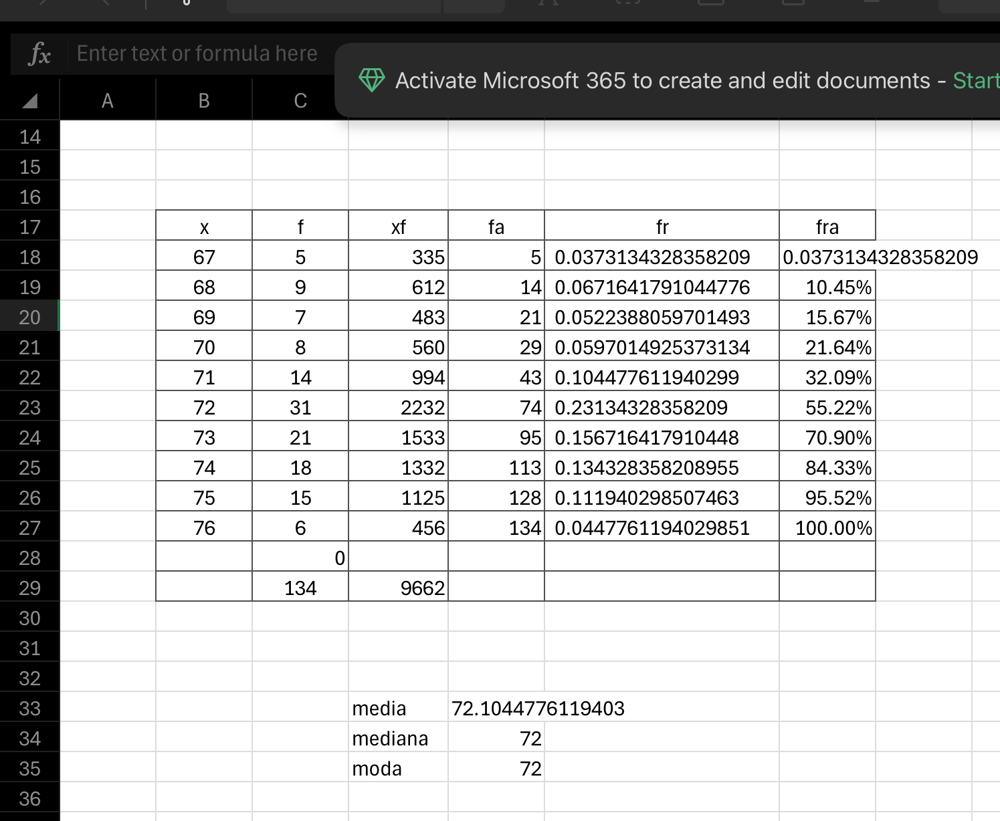
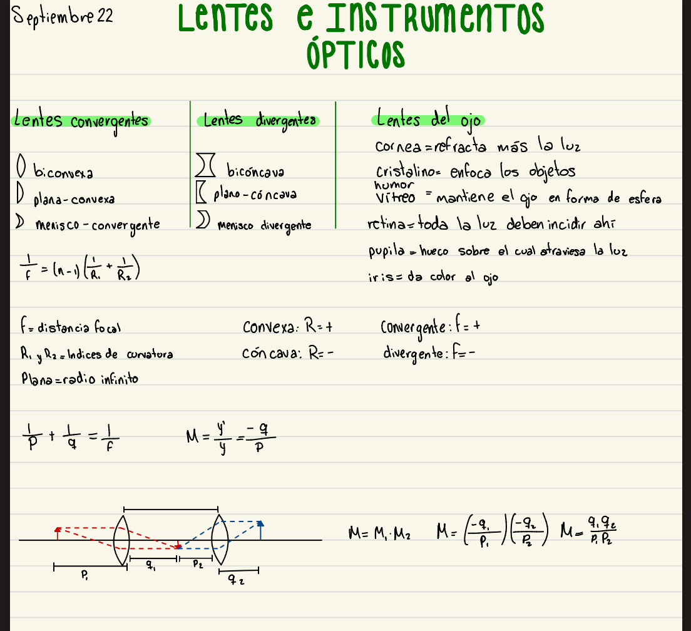
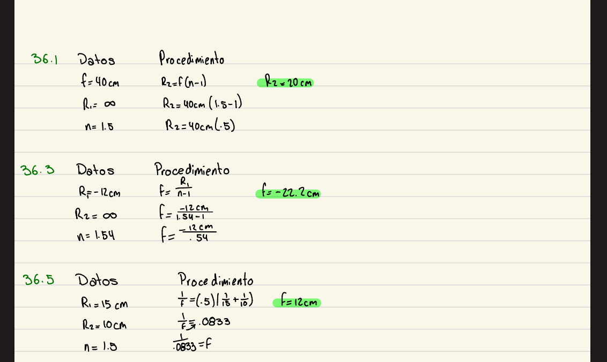

Competencias Matemáticas
EXCEL

Aprendizaje
Justificar resultados usando métodos numéricos y gráficos en una tabla de Excel de probabilidad y estadística, interpretando datos y comunicando la solución con lenguaje matemático y herramientas digitales.
Competencias
4. Argumenta la solución obtenida de un problema, con métodos numéricos, gráficos, analíticos o variacionales, mediante el lenguaje verbal, matemático y el uso de las tecnologías de la información y la comunicación.
APUNTES FÍSICA


Aprendizaje
Aprendí a aplicar las matemáticas en mis apuntes de física para comprender mejor los fenómenos y encontrar soluciones a distintos tipos de problemas de manera lógica y ordenada.
Competencias
2. Formula y resuelve problemas matemáticos, aplicando diferentes enfoques.
DIBUJO TÉCNICO


Aprendizaje
Aplicar conceptos matemáticos en el dibujo técnico, utilizando cálculos y geometría para representar con precisión las formas, medidas y proporciones de los objetos.
Competencias
1. Construye e interpreta modelos matemáticos mediante la aplicación de procedimientos aritméticos, algebraicos, geométricos y variacionales, para la comprensión y análisis de situaciones reales, hipotéticas o formales.
6. Cuantifica, representa y contrasta experimental o matemáticamente las magnitudes del espacio y las propiedades físicas de los objetos que lo rodean.
PRESENTACIÓN
Aprendizaje
Explicar y justificar los resultados de una elipse e hipérbola usando representaciones gráficas y cálculos, apoyándome en el lenguaje matemático y en herramientas digitales para mostrar con claridad el proceso y la solución.
Competencias
4. Argumenta la solución obtenida de un problema, con métodos numéricos, gráficos, analíticos o variacionales, mediante el lenguaje verbal, matemático y el uso de las tecnologías de la información y la comunicación.